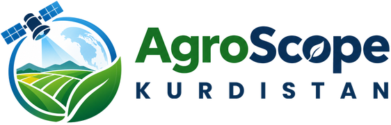

Privacy policy
AgroScope Kurdistan for Windows, including the Microsoft Store version. Last updated 10 November 2026.
AgroScope Kurdistan is a free program made by Kaifi Chomani (Egeocate Lab for GIS & Remote Sensing, University of Raparin). It has no account or sign-in, shows no advertising and does not track you. AgroScope Kurdistan itself does not collect, store or send any personal information to its author.
What AgroScope Kurdistan sends over the internet
To make maps, charts and forecasts, AgroScope Kurdistan downloads free open data for the field or area you choose. To do that it sends the coordinates of your area, the date you pick and the program's name and version to the public services that hold the data:
- FAO WaPOR (Food and Agriculture Organization of the United Nations), including the Google Cloud storage where FAO keeps the WaPOR files: water use, water stress and biomass
- Microsoft Planetary Computer: Sentinel-2 satellite images, the Copernicus elevation model and ESA WorldCover land cover
- Open-Meteo: weather forecasts, past weather (ERA5), seasonal outlooks, climate projections and river flow (GloFAS)
- EOX: the satellite background map (Sentinel-2 cloudless) and place names
- OpenStreetMap Nominatim: only when you type a place name in the search box, that text is sent to find the place
As with any web request, these services also see your computer's internet (IP) address. Each one handles that under its own privacy policy. AgroScope Kurdistan sends nothing else: not your name, files, drawings or results.
What stays on your computer
- Maps, charts and reports are saved in the folder you choose (the Desktop unless you pick another).
- Downloaded data and map tiles are kept in a working folder on your computer, so they are not downloaded again.
Uninstalling the Microsoft Store version removes them; with the zip version, delete the folder
%LOCALAPPDATA%\AgroScope. - Area files you open (GeoJSON, KML, KMZ, Shapefile, GeoPackage) are read on your computer and are not uploaded.
Children
AgroScope Kurdistan collects no personal information from anyone, including children.
Changes and contact
If this policy changes, the new version will be posted on this page with a new date. For questions, contact Kaifi Chomani through Egeocate Lab for GIS & Remote Sensing: egeocate.netlify.app
سیاسەتی تایبەتمەندی
نوێکراوەتەوە لە 10/11/2026. بۆ بەرنامەی AgroScope Kurdistan لەسەر Windows، لەوانە وەشانی Microsoft Store.
AgroScope Kurdistan بەرنامەیەکی بەخۆڕاییە، دروستکراوە لەلایەن کەیفی چۆمانی (تاقیگەی ئیجیۆکەیت بۆ GIS و هەستپێکردنی دوور، زانکۆی ڕاپەڕین). ئەکاونت و ڕیکلامی نییە و بەدواداچوونت بۆ ناکات. بەرنامەکە هیچ زانیارییەکی کەسی کۆناکاتەوە و بۆ دروستکەرەکەی نانێرێت.
بۆ دروستکردنی نەخشە و پێشبینییەکان، بەرنامەکە تەنها کۆئۆردیناتی ناوچەکەت، ئەو ڕێکەوتەی هەڵیدەبژێریت و ناو و وەشانی بەرنامەکە دەنێرێت بۆ ئەو خزمەتگوزارییە گشتییانەی داتاکەیان لایە: FAO WaPOR، Microsoft Planetary Computer، Open-Meteo، EOX، و OpenStreetMap Nominatim (تەنها ئەو ناوەی لە بەشی گەڕان دەینووسیت). وەک هەموو داواکارییەکی ئینتەرنێت، ئەم خزمەتگوزارییانە ناونیشانی ئینتەرنێتی (IP) کۆمپیوتەرەکەت دەبینن. هیچ شتێکی تر نانێردرێت: نە ناوت، نە فایلەکانت، نە ئەنجامەکانت.
نەخشە و ڕاپۆرتەکان لەو بوخچەیەی هەڵیدەبژێریت پاشەکەوت دەکرێن (دێسکتۆپ، ئەگەر شوێنێکی تر هەڵنەبژێریت).